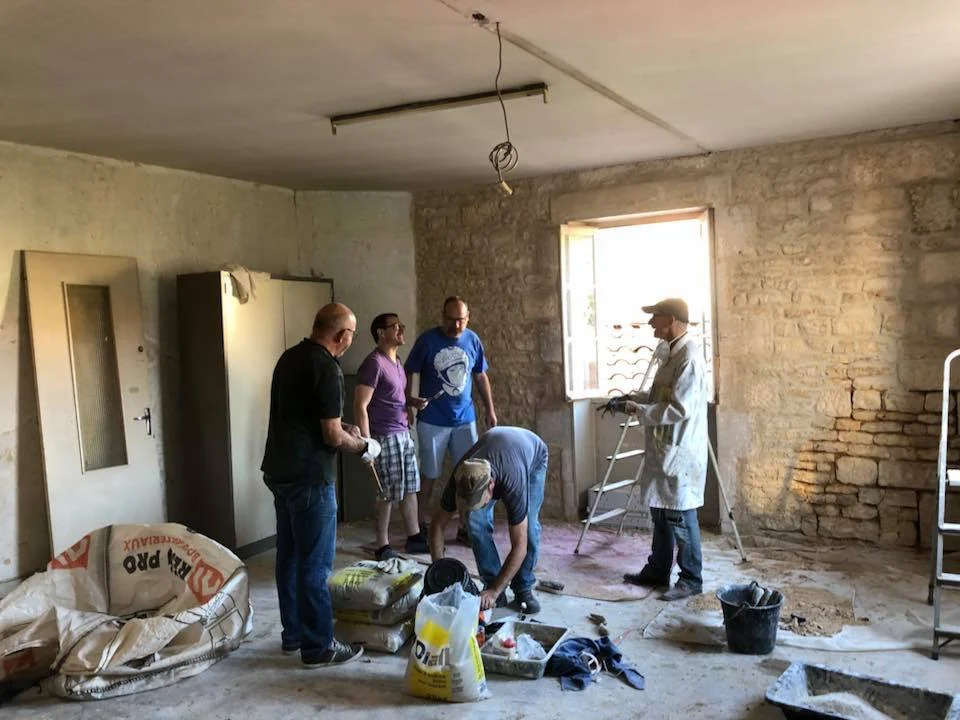
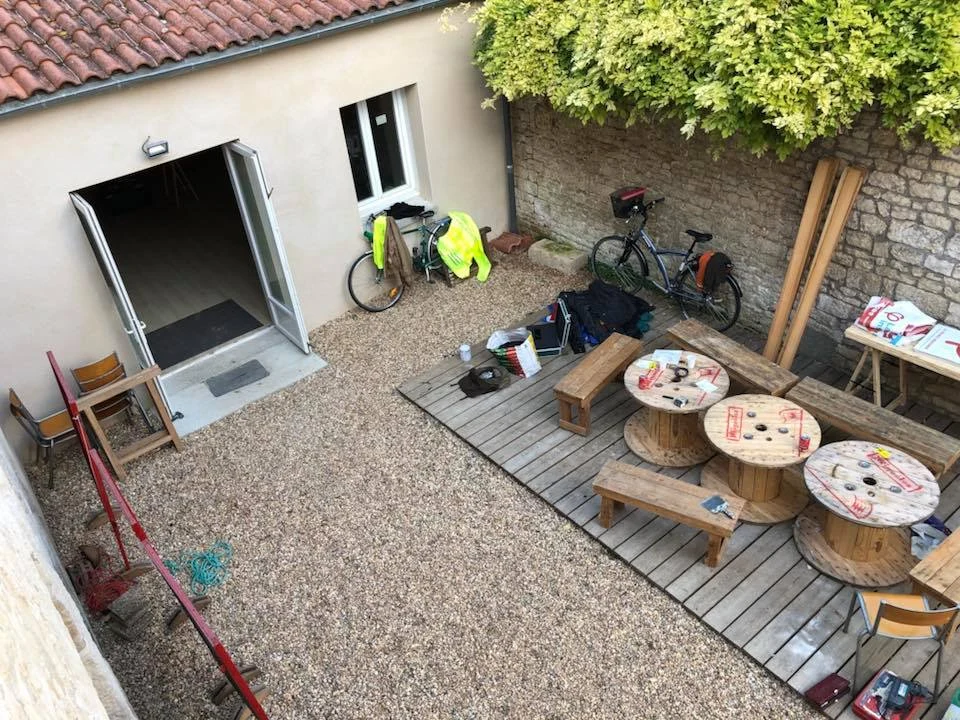
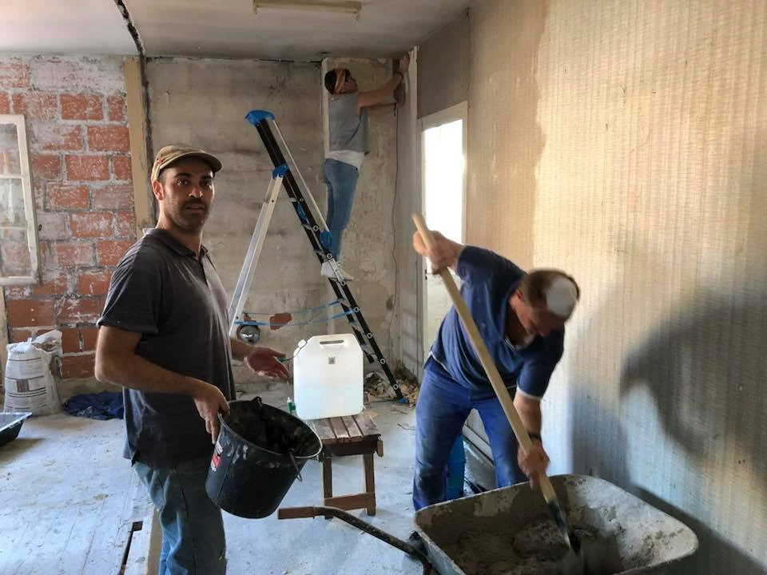
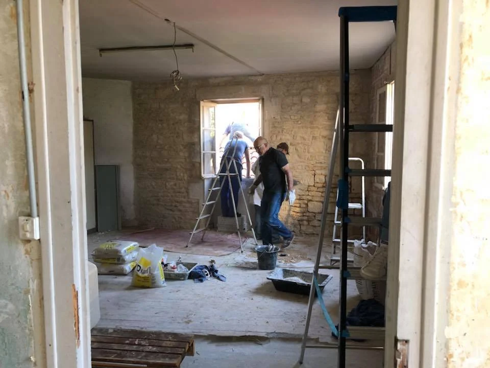
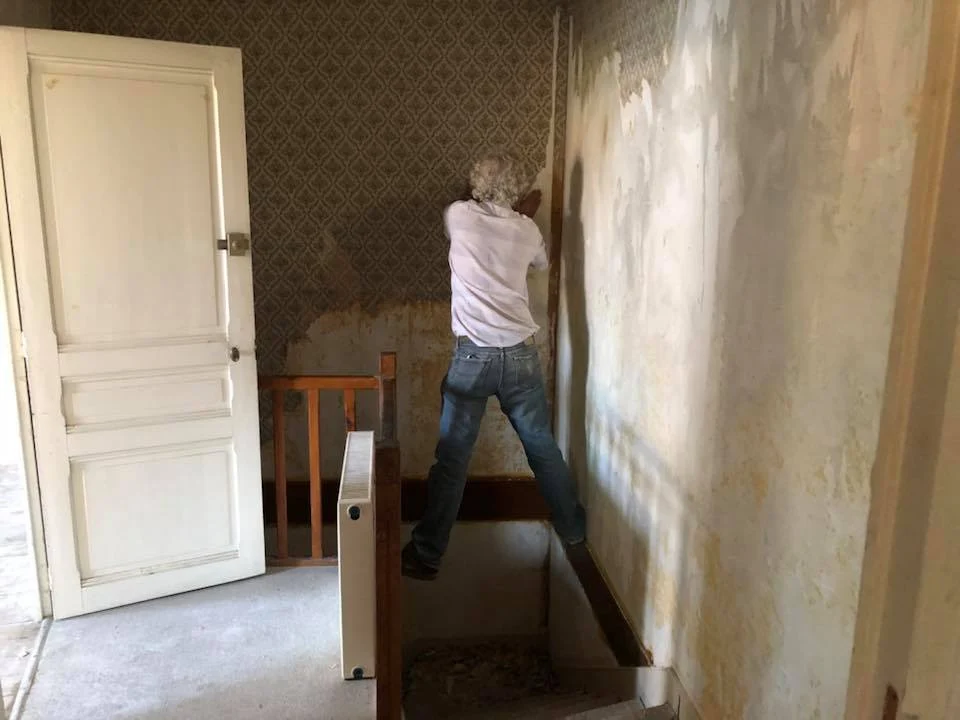
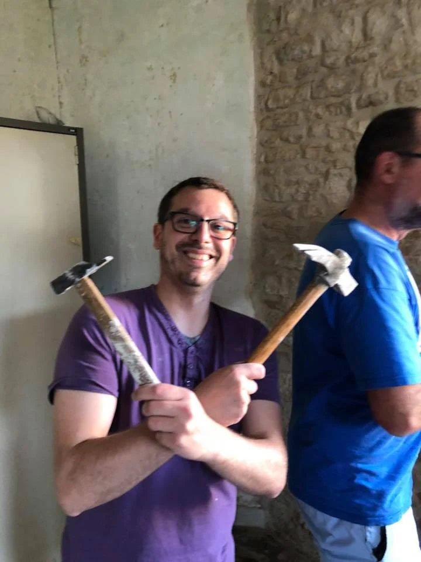
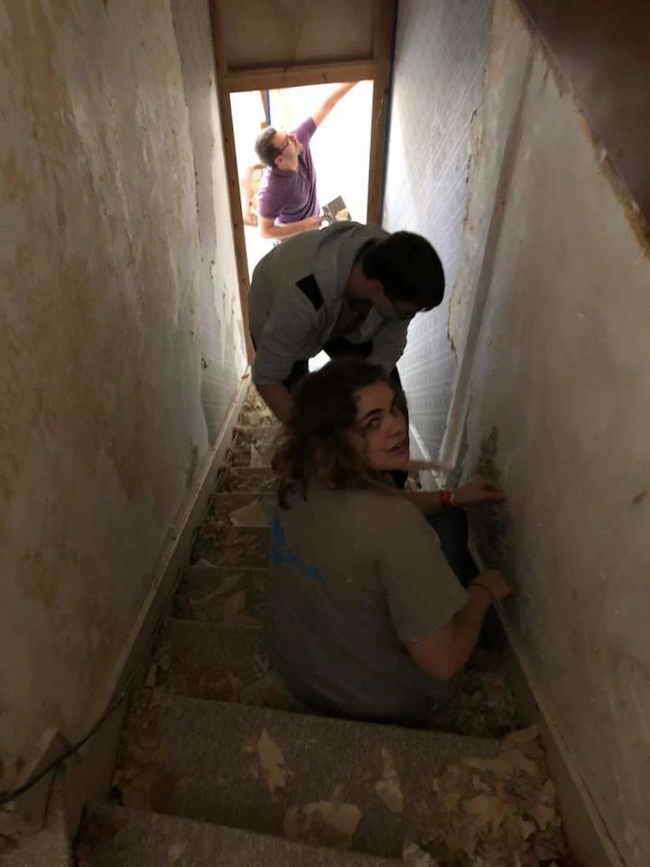
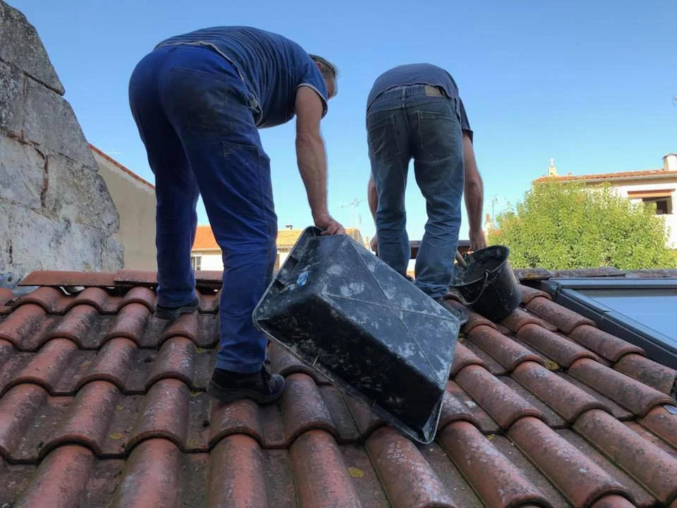
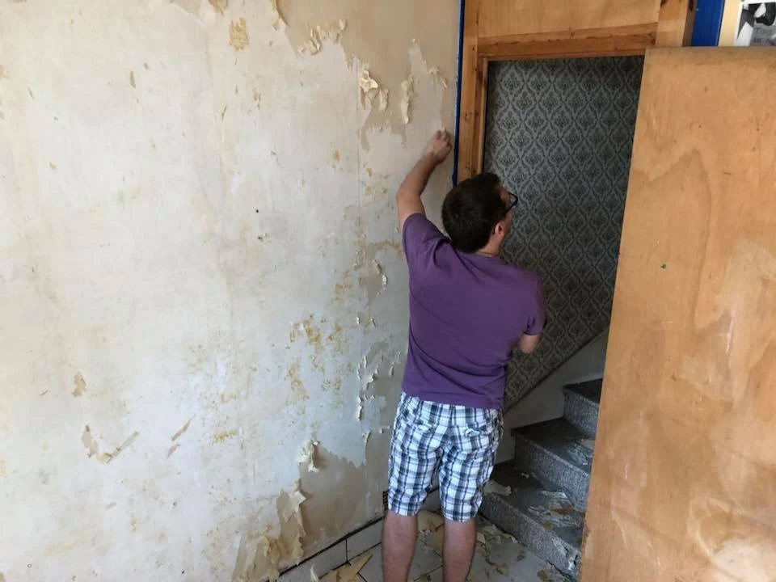
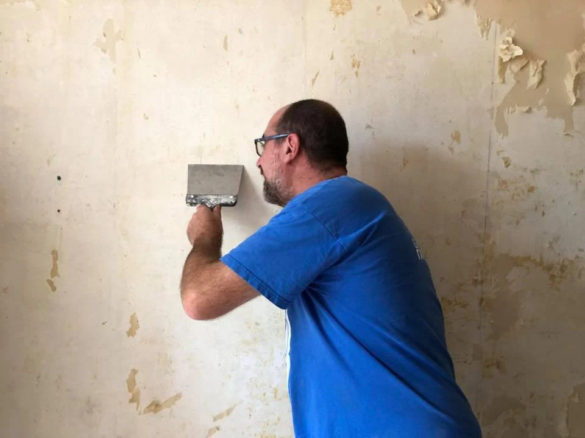

Vie fédérale
Chantier collectif et repas fraternel à la fédération
Date indiquée par Facebook · 14 octobre 2017
Repères éditoriaux
Le 14 octobre 2017, nos camarades se sont retrouvés pour des travaux de rénovation à la fédération. La journée s’est achevée autour d’un repas partagé, le « COCOscous ».
Texte conservé avec la publication
Travaux de rénovation à la fédération aujourd’hui ! Et pour finir, COCOscous fraternel ! 👍👌✊️










Sources
Archive rouge · export Facebook · AR-0002-FB-02128
À lire aussi · Bonne année 2026 de la part du PCF des Deux-Sèvres